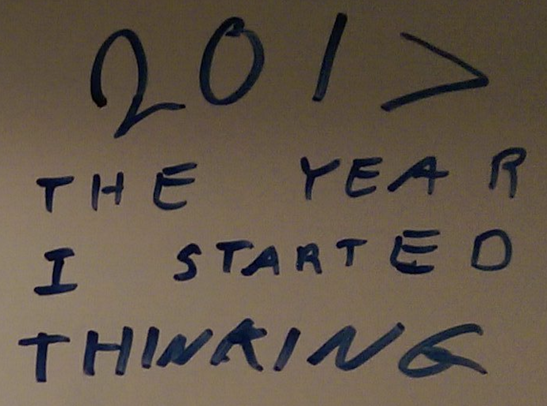
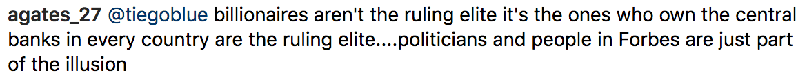
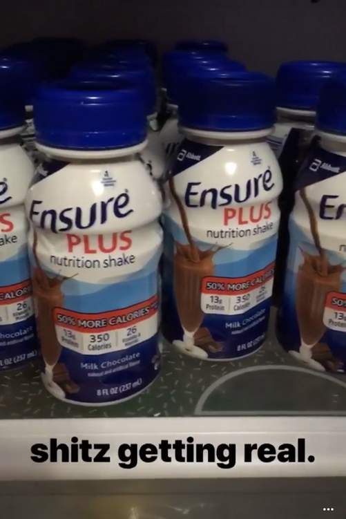
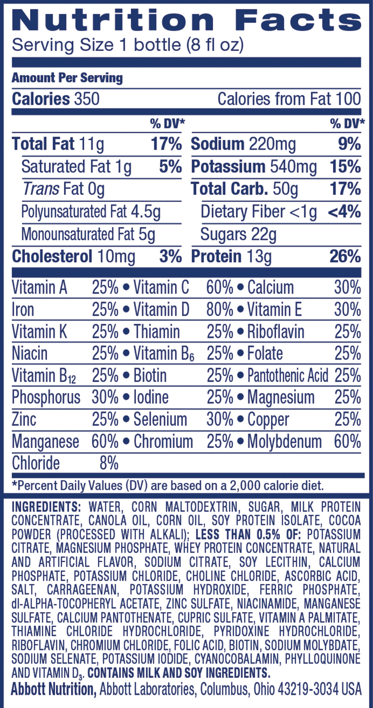
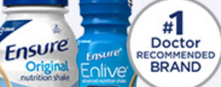
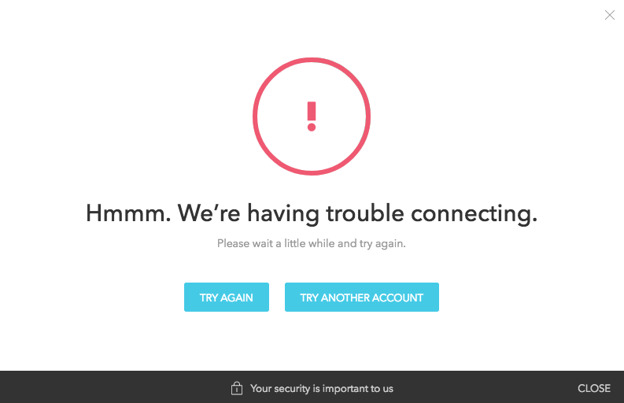
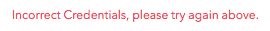

Towards the start of last year, I dubbed 2017 to be The Year I Started Thinking, based loosely off of the Laurel and Hardy skit that goes like this:
"You know Ollie, I was just thinking."
"What about?"
"Nothing, I was just thinking."
The subtle undertone being that I didn't have to tell anyone exactly what I was thinking about.
Part of it was also getting to a paint where I could focus on the few things that I wanted to focus on, and deleting those that I didn't, so I installed the theme of reduction and goal of simplification.
Now tha the year of thinking has come and gone, I think it's time to move onto something else. Thinking, by itself, does not move any needles. You can think all you want about something - think so hard that you mind nearly explodes - but you will have achieved nothing since before you started thinking.
As I have already proven to myself, overtly good things happen when you build things that support a specific function. There's a reason it's
- build relationships instead of think relationships,
- build rapport instead of imagine rapport, and
- build a wall instead of talk about a wall.
Thinking is a good first step, but to get anywhere beyond where I currently am, I have to stop thinking so much and start building. So 2018 will be The Year I Started Building.
How do I make it so?
Even though I feel as if I haven't thunk as much lately, there are still a bunch of ideas of things I can do in my head, and new ones are generated all the time. I'm not sure which one will be best.
Not being sure about something is the perfect time to sayd, "hmm, guess I have to think about it more," but that is not going to work in the year of building. Thinking about it more is a definite dead-end.
With that said, I'd like to propose a goal for this year: Build something worthwhile.
To me, something worthwhile is a think that provides benefit to a group of people other than myself. It is something that a group of people would get excited about, recommend to their friends, and would feel comfortable paying for it. But getting people to pay is not the priority. Before I would even feel comfortable asking for payment, I feel like I need to either build something, or understand the benefits that would be produced by the thing that I would build.
The first rule to accompany the goal is: Do not think more than is required to start building.
Having been in sales, I know how far one can go in trying to figure out what the customer is thinking without actually getting anywhere productive. The entire quarterly business review can be a big circlejerk of assumptions with everybody sharing their anecdotal evidence to back up their conjecture for what the customer actually wants.
Just ask, why don't you?
There are a few things in my mind as I write this. One is a dating platform that a friend wants to put together. The second is the Step-To-Freedom guide that you will find a link for at the top of this page. The third is to build a super detailed architecture diagram for my company.
There are all things that I have gotten feedback from the outside world to be valuable, so I would consider them worthwhile. They are at various degrees of progress, so I will continue to work on them and solicit feedback from the outside.
I just got an increbibly storng craving for an Oreo.
(Oreo pic)
I used to eat Oreos like anything when I was a kid. You know those plastic cylinder containers that are filled with like 17 oreos and twelve of them came in a bix blue box?
That box would last me about two weeks.
Eat oreos and play video games! That's what I did in elementary, middle, and highschool.
The other thing I was really into was the Juic-ey
(Juic-ey pic)
The only reason I ever went to Costco.
What went really well with juic-ey was chicken nuggets and ketchup. Twelve minutes at 350F in the toaster oven and lunch/dinner is ready.
Fish sticks were okay. I much prefered chicken nuggets. I would have fish sticks if there were no more chicken nuggets.
Yea, I had a pretty poor diet.
I feel like theure is too much going on. I don't have any time to myself - no time to breathe.
But, I feel like if I'm not doing SOMETHING, I'm wasting my time away and being unproductive.
Yet, I'm four years out of college and I'm not sure I have that much to say about what I've done in my life in that time. Time goes fast! Where does it all go?
My friend once told me, "I don't want to wake up when I'm 30 and think, 'huh, this is it? This is my life? I'm working at a job that I don't hate - don't love it either, and have free time to do some of the things I like on the side. I'm not super happy. Life's just okay."
So this is what the program is all about. It's the first step in a lifelong journey towards freedom. If you know you're headed somewhere you're not incredibly excited about, it's time to rethink. You have the freedom and ability to do so, so why not?
What did you want to be when you grew up? Is that you now? Does it feel like that is ever going to happen?
Do you feel like you don't have enough time to do the things that you want? If you're like me and most others, your work takes up most of your time. Unless you're working on something you really want to be working on, it will feel like work is the biggest sink on your time. Well, can you just leave work and live your ideal days for a month or two? Why not?
You have the OPPORTUNITY to be free to do whatever you want to do. But most people never take that opportunity.
Most people DO wake up when they're 30, 40, even 60, and think, "Huh, this is my life? That's it?" and wish they would have done more and taken more chances earlier in life. It's something I hear all the time from people when they are talking about their youth. I don't think it's even too late to start doing something, but I do think it can feel too late.
But you don't have to take the opportunity, of course. You're already very lucky to be the part of the world's population to have the opportunity. A lot of people don't even have access to the opportunity because of where they were born, what group of people are in power where they are - things that are totally out of their control. Just HAVING the opportunity means that you already live a pretty good life.
The only thing that you'd be doing is making it better. And if you make your life better, you're more likely to be able to make other people's lives better as well. Because of this, I think it's foolish to not take the opportunity. I believe we all have an innate obligation to make as many people's lives as good as possible.
Of course - you can continue going as you are. Do nothing. Keep waiting for the the raise. Keep waiting for the million-dollar idea to come to you. Keep waiting for things to get better. But where will you be six months from now? A year?
Probably in the same place. Maybe not physically, but in the same state of mind, with the same troubles and the same desires - and all of them feel just as out of reach as they have ever felt. Unless you do something about it.
Take action. It doesn't even have to be going through the steps I've laid out. It can be anything that gets you somewhere. Just do something.
Don't live on someone else's time. It's 7:43 here for me and I have to stop to leave for work to make it in for a meeting, even though I wish I could keep writing because I'm really in the mood to do that right now.
Here's a reason why, when building machinery to do something, you should make it properly and complete:
I'm at work right now, in the middle of working on a specific task that brings me zero joy or satisfaction, and as you can read, I've stopped doing it and am now writing this. In a way, I feel like a switchboard operator.
Switchboard operators are typically required to have very strong communication skills.
1
Hey, as an employee at a quickly-growing small enterprise software company, I am supposed to have strong communication skills to ensure collaborative synergy.
If it's not already clear, here are five reasons you should think about the long-term when creating a system:
-
Humans are the worst at doing mundane things in a repetitive fashion
It's not going to be true for everyone, but it sure is true for me. Once I get really, really good at doing something, like the thing I stopped doing to write this list, I start hating it. Even though I'm really good at doing it, having me do it is a very inefficient way of performing the task. Honestly, I feel like a highly paid switchboard operator. If this was the only thing I could do at work, I'd be gone already.
-
It's much, much more prone to error
Being that I don't really care to much about the task at hand, I'm likely to let the quality of the output slip. Each time I have to make a decision, I get fatigued and wish the task would go faster so I can be done with it sooner. Not sure what to do about this particular thing? I should research it, click on the links to learn more, maybe do a seach on some of the strings... nah, just ignore it and move on. Nobody will know the difference.
False negatives are not too bad as long as there's no mention of the condition or attribute being present. But, a sloppy job can also result in false positives, which can be much worse. The output of my work would ultimately get put into some sort of report, and it's no good if a report containing false positives goes to the customer. Each time I have to make a conscious decision based on several different input data, the chance for that happening increases.
-
It's really expensive to not do it right
The small enterprise software company that employs my services, powered by investor dollars, has a limited amount of time to get to self-sufficiency. If the company can't get to that point, leadership will have to look for exits before the valuation drops too low and money runs out. I'm expensive. There are several others on my direct team that do similar work - they are all expensive. If we are doing work that could be automatically done by a machine, then we are being drastically overpaid for what we're doing, and the company is losing more money than it needs to.
The amount of upfront work needed to build a system properly pales in comparison to what'll spend on maintaining it later on. The opportunity cost of paying several people to do a bunch of pixel-moving tasks instead of working on growing the business is tremendous.
-
Nobody wants to fix old problems
These tools are the result of engineering projects. When a peice of machinery needs to get built, a team is allocated to the task to see it through to completion. When the project is done and the result delivered, that's it - it's now time to move on to other projects. Sure, bugs will be fixed, but core functionality? If part of the core functionality is to have a human do exception handling, it's going to be that way until the core functionality changes. Change the core functionality? No, we can't do that now, there are more important things to work on today. Besides, the task can still get done, even if it takes a bit longer and it's more expensive.
This guy doesn't get it:

Things aren't illusions, they just are. It's only an illusion because you can't see what's happening on the higher level.
One of my recently friends just posted an Instagram story:

Using them as supplements
As you know from my earlier post on toothpaste, I like to keep track on what people are doing and how they are thinking about various products on the market because it helps me to inform my portfolio decisions. Obviously, I can't base most of my decisions based on what I think of most things, because after doing a little bit of research, I find out that you don't need them, they don't provide the benefits they claim, or they are bad for your health.
In the case of Ensure, its the latter two items.
Hey, the name of his blog is Living Without Stuff, not Living With Stuff That Will Kill You Faster.
If you aren't familiar with Ensure, it's a #1 doctor recommended source of complete, balanced nutrition in a bottle manufactured by Abbot Laboratories. Each shake is packed with 24 essential vitamins and minerals.
1
Ensure comes in a variety of different forms that you can pick from depending on what you want to acheive.
If you want to lose weight, there's one for you. If you want to gain or maintain weight, there's one for you. If you just had surgery and need to reduce insulin resistance, gee golly, there's one for you too.

Many different options to choose from based on where you are in life.
If you go to the Ensure website, you can take a survey
that will ensure that you find the right Ensure for your needs.
I first learned about Ensure a few years ago when my grandma came back from the hospital after having water buildup in her lungs.
I remember the events around the incident quite well. I had made a weekend trip home from college to celebrate her birthday. We all went out to a fancy-type low-lighting restaurant where the dinner menu was set and you mainly chose your drinks. The lobster tasted like nothing, so my dad and I kept asking for more lime and salt to put on the thing. I wonder if that upset the chef.
The next morning, she was throwing up, having a really hard time breathing - we all thought it might be the beginning of her end, including her. We rushed her to the hospital and they started running tests immediately.
They were close to having to perform surgery to have stents put in her, but she fought hard and recovered to the point where the doctors deemed it unnecessary.
The next time I came up to visit, I came through the garage and saw several boxes of a thing called Ensure. I picked one up and looked at the ingredients.

From my prior research on nutrition, I immediately recognized several ingredients that are not part of a healthy diet because they promote inflammation, cancer, diabetes, and a bunch of other bad things.
There were also some I had not heard of before. It might be surprising to know, but with the Internet, you can find a lot of information on a thing just by entering the name of the thing into a search bar. Google works particularly well for this.
The steps to do research on a thing are:
1. Enter name of thing you want to learn about.
2. Click on the links and start reading.
3. If you have another thing you want to learn about, go back to step 1.
One of the ingredients that I learned about at this time was Carrageenan. If I search now for 'Carrageenan' this is what I get:
Let's go on a bit of a detour from the main point of the post and go through each of these links, starting with the sponsored result.
The first result comes from FMC Corporation on their website foodsciencematters.com. The domain is owned by Du Pont. Du Pont and FMC's businesses seem to mutually benefit each other.
2
Google displays this result as being an ad.
The page on Du Pont's website starts with an overview of what is Carrageenan, discusses its social and environmental benefits, provides a list of foods that contain it and why, then explains in great detail why Carrageenan is not bad for you, noting that 'you may have heard some rumors of health concerns surrounding carrageenan safety' and that there is a lot of misinformation and misguided science out there, and it can be difficult to know what is true and what is not.'
The page wraps up the discussion with making sure that you understand that it's safe once more, then gives a very nicely illustrated history of Carrageenan.
The second result comes from Wellness Mama on her website wellnessmama.com.
The domain is registered to a private registrant through Tucows.
The page opens in a similar fashion to FMC Corp's page, giving a short overview of what is Carrageenan, straight from 'the Google,' then dives into all of the problems associated with it, using quotes from doctors and researchers in the field to support the claims. The site does get you to try to sign up for a mailiing list in many different ways, which I found slightly annoying.
The conclusion is that Carrageenan 'may not be as bad as some sources portray, but there is evidence that it can be harmful, especially if consumed regularly.' So her family avoids it because there is an unknown risk that is not worth taking, and it's main purpose is thickening and does not serve a nutritional purpose.
The final result we'll look at on this detour is Dr. Weil's page drweil.com. The domain is registered to Larry Tree of Weil Lifestyle, LLC, 'an organization founded by Andrew Weil, M.D., is the leading resource for education, information, products, services and philanthropic contributions based on the principles of integrative medicine'
3
The page is found in the Q&A section, the question being 'Is Carrageenan safe?' The answer starts with an explanation of what is Carrageene and where it's found, just like the other pages. Dr. Weil references studies done by Joanne K. Tobacman, MD in 2012 which found that 'exposure to carrageenan causes inflammation and that when we consume processed foods containing it, we ingest enough to cause inflammation in our bodies' which is the root cause of new diseases like heart disease, Alzheimer's, Parkinson's, and cancer.
The article ends with telling us that the European Union has banned it for use in infant formula, while the FDA and WHO say it not of concern in concentrations up to 1000 mg/L. His official recommendation is to avoid consuming Carrageenan.
Horaay! Detour complete!
So, after doing iterative research on Carageenan and several of the other ingredienst listed on the bottle, I went to my grandma and told her to not drink it unless she wanted to risk dying more quickly.
Imagine that, being told by your grandson that drinking this thing that you were told was good for you would kill you faster. I wonder what people thought of that...
It turns out that my cousin's wife, a registered dietician, had recommended Ensure to my grandma to make sure that she was getting all the nutrients she needs because she typically eats very little.
As always, I got a lot of pushback on my advice because I was up against a registered dietician, wife of the golden child of the family, who can literally do noting wrong. But, a while later, my grandma said Ensure made her feel strange and she stopped drinking it.
I'm glad that she did.
But that's not really what I'm here to tell you! I'm here to tell you to buy ABT, remember, because of this:
ABT currently has a dividend yield of 1.97%
Almost everyone American today has access to the Internet, and many carry supercomputers in their pockets all day. Information like that we reviewed today is literally at everyone's fingertips.
Despite that, the increase in 2016 U.S. Adult Nutritional revenues was driven by the growth of Ensure sales, which account for about 35% of Abbott's revenues.
4
My point is this: ABT looks like a pretty good investment, but I would not have considered investing in it because I would never purchase Ensure, or most other products - until I saw my friend's post.
The 'purchase the stock of the companies that you believe in' concept doesn't apply here. You should instead follow the concept of 'purchase the stock of the companies that others believe in.'
It doesn't matter what I believe. It doesn't matter what you believe. It only matters what most people believe, because they are the market. I am not Abbott's target audience, and they know that. Their target audience is the mass of people who will take the advice of 'experts' like the FDA, WHO, and their registered dieticians - like my cousin's wife - without spending time to figure out what it is they are putting into their bodies.
Abbott's target audience are those who fall for this:

Ensure came out #1 out of 1 product(s) reviewed
Because Ensure contains ingredients that may potentailly have negative effects on ones health, there are other related investments that we can discuss at a later time. For example, if regular consumption of Ensure is linked to increased chances of diabetes, there are several companies pumping out products to solve that problem whose profits should increase as a result.
Investment risks
There are risks associated with any investment, so let's review some of them.
-
Consumers start doing research
The first risk is that consumers will start doing research on Ensure, realize that it's bad for them, and stop purchasing it. This will cause sales to come to a halt as consumers look for alternatives.
I'd say that this is a low risk, because companies in the healthcare space tend to have very good contingency plans for things like this. The introduction of similar, but differently branded, new product, coupled with approval and recommendation from regulatory agencies, could be used to offset the losses from declining sales of Ensure.
-
People read this blog
Nobody reads this blog. But if you're reading this and you drink Ensure, don't be fooled! I'm just a crazy person on a rant. Pay no attention to what I'm saying. You don't know who I am, and I could be lying for all that you know.
However, if you do come to your senses, this risk can be mitigated by you not sharing this post with your friends, family, and colleauges. If you are inclined to spread the word, please drop me a line so I can take steps to reduce my holdings in ABT.
-
A competitor emerges
Due to Ensure's immense popularity, other companies may attempt to compete for Abbott's market share. If the competing company has the resources to ensure approvals, a wide audience reach, and compelling marketing, sales of Ensure may be lost to increased interest in the competing product.
As an investor, you should always be nimble and aware of what's going on. Take note of what people post on social media. If a competitor emerges, adjust your strategy accordingly.
Additionally, you may want to consider investing in a healthcare ETF or mutual fund to add diversification to your portfolio.
The above references an opinion and is for information purposes only. It is not intended to be investment advice. Seek a duly licensed professional for investment advice. I may or may not have initiated a long position in ABT in the last 72 hours.
The world is an arena.
Survival of the fittest is still going on, but not in the way that you might expect.
When we were still going at it with sticks and stones and chasing after our food, only the groups that had the strongest humans would be able to survive. If you couldn't catch your food, you had to find other creative ways of surviving, such as providing a good or service to the strong group in exchange for food.
That marks the beginning of any societal structure - the moment that one human becomes dependnent on another for sustained sustinence. As the society grows bigger, perhaps the person one hop away from the food producer will have someone dependent on his goods or services - his skills in other areas of life-improvement developed because he left the food catching to someone else.
Today, everyone is working for each other - providing specialized things that the buyers cannot get for themselves.
Go on long enough, and you have what we have today. Each of us depends on so many hundreds of people all doing things that we have chosen to pay for instead of do ourselves, and we need to specialize in something so we can keep providing goods and services that others depend on. And because each of our specializations are focused on improving things for other people, everything is just getting better and better as time goes on.
Wait, but why are we still bombing people?
Because the original human that people started depending on for sustinence had a territorial dispute with the other original human and it's still going on.
Well, today survival of the fittest means something different. We're now in a phase of contraction instead of expansion. There's a bunch of stuff that people do and produce that are not going to be needed at some point. What do you do with all of the people that relied on a specialization that stopped being sought after?
The government will provide for them? Raise minimum wage?
lol
A lot of people died from the flu this season, see if you can figure out why.
------------------------------------------------------------------------------
Login to Facebook and see this:
I laughed out loud.
How great is it to not have to be bothered by such worthless mumbo-jumbo any longer because you know it doesn't matter?
My favorite line: "Democracy requires audience participation!"
Yes, you are the audience.
And this is your active participation.
You don't even have to go to the voting booth, the Facebook post is participation enough.
I scrolled down a bit from this and there was a funny video about a couple of suburby rager kids going to some sort of council of representatives to tell them why they oppose the ruling of not allowing house parties in their neighborhood.
That was pretty funny.
------------------------------------------------------------------------------
Why Johnny can't think: http://cs.bc.edu/~kugel/Publications/WhyJohnnyCan%27tThink.pdf
------------------------------------------------------------------------------
What did I find that convinced me to stop using toothpaste? Perhaps more importantly, what made me continue to be bullish on toothpaste sales, even though I stopped. Wasn't I afraid that others would find out the same thing and also stop using toothpaste?
Well, I don't remember what exactly happened. But I'm sure we can create a fresh sensation.
Let's start by going to the Colgate website: https://www.colgate.com
Click on Oral Care Center --> Cavities
No products? Wait, Too Much Drilling? Not All Early Tooth Decay Needs a Filling? Interesting...: https://www.colgate.com/en-us/oral-health/conditions/cavities/too-much-drilling-not-all-early-tooth-decay-needs-a-filling
Ah, there's a product: https://www.colgate.com/en-us/products/toothpaste/ct-clean-mint
Let's check out the ingredients: https://smartlabel.labelinsight.com/product/4051754/other
It's easy to look up an MSDS: http://www.sciencelab.com/msds.php?msdsId=9927595
Where to buy? We can get it on Amazon. I wonder what the reviews say: https://www.amazon.com/Colgate-Total-Clean-Mint-Toothpaste/product-reviews/B000RK9SFQ/ref=cm_cr_dp_d_hist_1?ie=UTF8&filterByStar=one_star&reviewerType=all_reviews#reviews-filter-bar
I found a link to a NYT article: https://www.nytimes.com/2016/09/07/well/live/why-your-toothpaste-has-triclosan.html?register=email&auth=register-email
You can go on. Hopefully this answers both questions of why I stopped using toothpaste, but also am not too afraid of Colgate losing the 44% total market share of the oral hygiene market that they have.
------------------------------------------------------------------------------
---Follow up to the toothpaste post:---
It's not about what I beleive or want you to believe that matters. It only matters what YOU believe.
I would never use toothpaste again. But as long as people continue to believe in the requirement of toothpaste for healthy teeth, it will sell, and I will continue to profit off of your ignorance.
My dividend is safe as long as the charade endures.
Good thing people are only on Facebook these days.
There are other industries in my portfolio that I benefit from financially whose products I would never use.
In 2012, I pointed out the NVAX would do really well. Following my prediction, the stock quadrupled in price the following year because news of an [virus] broke out for which they were developing a vaccine. There was a lot of hype around their product that increased its valuation.
But if you ask me to take the vaccine, I would never do it. I would never buy one.
Merck has done wonderfully as well. They have done something ingenious - they came out with a product and have been slowly increasing the market size by influencing public health recommendations.
When they first introduced Gardasil, their target market was limited to young or adolescent girls that were starting to become sexually active. Today, public health officials recommend that girls AND boys get the vaccine at birth. This increased the prospects for Gardasil many times over, and increased the conversion rate by administering the vaccine when parents are just beginning to learn the meaning of "anything to keep my baby healthy."
I love the strategy they used because it's a pure marketing play that gets inside the minds of their customers and speaks directly to their greatest fear at the moment. What parent would decline the treatment when told that their newborn child might die?
Huge kudos to their strategy and marketing teams.
Great product, too.
But I will never get it. My son, or daughter for that matter, will not get it.
But I will continue to buy Merck stock.
Because it does not matter what I believe. I'm just one person.
It matters what my neighbor believes.
It matters what my friends and colleagues believe.
It matters what you believe.
It's not what I believe that will keep sales of Gardasil strong. I'm just one of the guys collecting a dividend.
The only problem I might face is that if it's administration becomes a legal requirement, it might be an expensive ordeal to get out of it, so I do feel the need to prepare for that.
I need my version of ultimate FU money.
But first, I need a short-term type of FU money - the type designed to get me to the next step in life.
I'm actually in the process of getting it and you can follow my journey here (link).
If you're interested in getting to your own version of FU money, you can follow the steps I'm laying out here (same link).
------------------------------------------------------------------------------
---TOOTHPASTE---
I love Colgate.
It's a great company. They make wonderful products. A true example of a spectacular, profitable, and well-run American company.
Arm & Hammer is great too. Pepsodent. whatever else.
Who cares? I own stock in all of them. You could say that I am invested in the toothpaste industry. If the industry does well, I make money.
And boy, do they make money.
They make so much money that they give me money just for ownig a part of the company!
I haven't used toothpaste since college.
What?
There are a lot of wonderful, spectacular companies out there that reward you for owning a part of them. The management team gracefully decided to give the owners money in the form of dividends. Of course, they are all owners as well so they are in a sence just giving a bunch of money to themselves, but I get my fair share of the cut.
My taxes might be higher than theirs because my ratio of W2 to qualified dividend income is higher than theirs, but one day I too plan to make qualified dividents my main source of income so that I may reap the same benefit. Yea, tax laws may change to close this loophole that the rich benefit from tremendously, but they have huge influence over the people that write tax laws so I'm sure another loophole will pop up that will allow for a similar thing.
Anyway, Colgate. Great company. Tyson, Merck, Disney - all great. Couldn't ask for better results from these guys.
But why haven't I used toothpaste in so long? Six Years! That's a long time. What's going on?
Am I just that really stubborn guy that won't give up on getting the last drop of toothpaste out of the toothpaste tube?
my-toothpaste.png
No.
I've just been brushing without toothpaste. Sometimes, not even brushing.
But don't be alarmed! My last visit to the dentist went very well! Not only did I not have cavities, my dentist was surprised at how clean my teeth were because the last time I visited her was three years ago.
She even had a Colgate ad in her office. When I saw it, I pulled out my phone and bought another share of CL. When I complimented her on the ad placement, she said, "that's not an ad, it's an infographic about periodontitis!"
I whipped out my phone again and bought another five shares of CL. I'm sure close to ALL of her customers use toothpaste, with a preference for Colgate.
What about you, do you use toothpaste? What kind?
Man, it's basic knowledget to use use toothpaste while brushing your teeth. Tell people you don't use toothpaste and they'll look at you funny and say, "GROSS!"
Trust me, I know. But that doesn't bother me.
Everyone I know buys toothpaste. You use toothpaste. Everyone you know buys toothpaste. So many people buy toothpaste. People even make it a point to buy toothpaste to donate to people in need!
PHS-landing-page.png
(Image link with ref to below page)
http://projecthealthysmile.org/
Do you see what they're holding?
PHS-CL-ad.png
Colgate toothpaste!
I just found out about Project Healthy Smile and the video on their front page convinced me to buy another two shares CL.
Colgate's marketing department is killing it. They have so many people buying their toothpaste and other products that they have run out of ways to reinvest in their business, so they just give out the over-the-top profits to shareholders like me!
Shit, I bet even Bill Gates buys toothpaste.
Speaking of Bill, I really like what he's doing in the name of trying to eradicate a bunch of diseases because it's really helping my holdings in the pharmeceutical sector.
Back in college, I looked at the back of my toothpaste tube and read the thing. It said something like 'HARMFUL IF SWALLOWED' and keep out of reach of children. I had read it before, but never thought much of it for some reason. Why as it harmful if swallowed? And why keep it out of reach of children?
I never cared enough to go find the answers to those questions until that day.
Turns out that fluoride, one of the active ingretients in toothpaste is a deadly neurotoxin.^1
Ah, that makes sense why they don't want children to swallow it. It tastes so yummy, parents might allow their kids to swallow it after a good job brushing. If it's not stated, how would they know not to? If I were a parent, I would think that toothpaste would be safe to swallow because you put it in your mouth. And it tastes good...
Can't have that be a hindrance. If people unknowingly swallowed something that made them sick, Colgate might have a lawsuit on their hands.^2 That will cost a whole bunch of money and reduce the amount of dividends they can pay me, so I'm glad they started putting a warning on the tube.
Through my research I also learned that I have a mild case of dental fluorosis from ingesting too much fluoride, as you can see from the slight discolorations on my teeth.
So I stopped using it. It didn't make any sense to keep using it when I knew it was bad.
I tried some other things in place of it, even trying oil pulling at some point, but ended up just brushing regularly without any toothpaste. And that worked just fine.
I haven't had any cavities since quitting toothpaste.
The only part I miss is the minty-fresh feeling you get after brushing, but at least I can use the money I don't spend on toothpaste to buy CL. And CL pays dividends!
It was weird telling people why I stopped using toothpaste when asked about it. I feel like if you find out that you're doing something harmful you would stop doing it.
But everybody I've told still buys toothpaste, so I continue to buy Colgate stock. I think my dividends are pretty safe.
Just like my teeth.
I hope my little experience has not turned you off from buying toothpaste. Pay no attention to anything you read on this blog - they are just the rantings of a mad man.
FOOTNOTES:
1. Fluoride may not have been classified as a neurotoxin until 2014 (http://www.thelancet.com/journals/laneur/article/PIIS1474-4422(13)70278-3/fulltext). Although, the warning had been on toothpaste tubes as long as I can remember, and I can remember at least until elementary school. But it must have been known prior to 2014 that toothpaste was harmful - especially to Colgate - because why else would they have a warning on their product?
2. (Put links to news about it happening?)
3.
------
Questions I don't exactly know the answer to or can't look up quickly:
- How much have I saved this month? (actually, kinda can by using the cash flow diagram)
- What percentage of my after-tax salary am I saving? (can kinda do this as well using the same thing... )
------
Goal for 2018: Be less accomodating?
It was not until long afterward that I understood the whole truth of the matter. People never trust an accommodating man with important things. That may sound harsh and cynical, but check it up in your own experience. If you have a severe illness, for example, you turn to the busiest, most exacting doctor in town. The fact that he is busy and can’t be bothered by little things gives you confidence in his ability and judgment.
- https://mikecanex.wordpress.com/2012/12/26/1922-why-i-quit-being-so-accommodating/amp/
------
When will the next recession hit?
Predicting when the next recession will hit is a fun pasttime. People are always trying to do it for all kinds of reasons, from perfectly timing their market investments to get in at the lowest possible price to gaining credebility to sell product to people later because they were right.
So here's my completely unfounded, totally random prediction. You should not listen to it and just go about your life as normal.(sup 1)
I'm not going to bring any sort of technical analysis into this. Putting numbers to something that is completely based on human sentiment is dumb to me. According to several people who are looking at technicals, we should already be in a recession because shit's so fucked up.
But we're not.
Even though shit is really fucked up.
Yes, we should be in one already. I agree with that. But, to the dismay of economists who structure so much data behind their predictions, the markets don't really work like that.
How do they work? What's the main driver?
Emotion.
Markets crash when a bunch of people all lose faith in it at the same time, causing them to go sell their stocks to save their money from completely disappearing.
I would think social psychologists would be better at predicting when recessions would hit than economists.
That's what my prediction is based on: what other people think.
Numbers show otherwise? Numbers show that we're in over our head again moreso than the 2008 crash?
"Eh, fuck that. Things are going well for me. I have a job. I can eat. I just bought a new car.
Besides, we're working on making America great again."
As Mr. Money Mustache points out, we're currently in the third longest bull market since the end of the second world war.
http://www.mrmoneymustache.com/2017/06/20/next-recession/
The longest one before that was the 1991-2001 period which ended with the Dotcom bubble popping. Many people say that this feels just like the early 2000s, when "investors" got excited about stocks with certain naming conventions.
 Today, Silicon Valley is full of entrepreuers trying to make their next million.
It's also full of underpaid youth who have forgone salary in place of stock options that they think will be worth something when their awesome company with great culture goes public.
Spoiler alert: they wont. Every company can't be a unicorn. Even if your company does have a successful IPO, you better hope that your founders don't stop caring right after they cash out. There have been countless stories of founders cashing out, moving on to starting something else, and leaving the old business to tank. And by the time the regular folk's lockup period is over, they find out they got sacked.
On top of that, people are going fucking nuts with buying new shit on credit.
Malls were full this holiday season.
I saw plenty of new cars in the streets.
Smart homes are the new craze. With a voice-activated device, you can control your new 4k QLED TV, heater, lights, alarm system, sprinklers, and even turn on off your stove if you forget! (Sup 2)
Anyway. The party cannot go on. But for now, things are going to be great.
Until late 2019 or early 2020, at least.
---
If you've been following Trump's efforts to getting his latest job, you'll know how much hard work he must have had to put in to get it.
He's finally made it.
He's been wanting to get the job as CEO of America for the longest time. He's planned on entering the race many, many times, but has always dropped out because he wasn't absolutely certain that he would win.
Now that he's in, he's obviously going to want to get promoted to a second term. It would be a total waste to have tried that hard, spent all that time to get there and then only serve one term.
A financial crisis during his first term would not bode well for when he has to reapply for his job.
In order to win again, he needs to keep his supporters happy. Everybody that voted for him this time needs to vote for him in 2020. He needs to make them believe that he's doing good by them.
In comes the new tax plan!
Businesses are going to do better because the corporate tax rate is dropping to 21%. This means that earnnings calls for the next several quarters will be good. Stocks will continue to climb.
Most people will pay less taxes due to a reshuffling of the lower tax brackets and doubling of the standand deduction.
Removing the state and local tax (SALT) deduction only hurts those in states that have high income tax, like California, Oregon, New York, Minnesota, New Jersey, and Illinois. But, all of those states didn't vote for Trump, so who cares? He doesn't exactly need to make them happy for the next round.
The lowering of the mortgage interest deduction from $1MM to $750k hurts people who have bought big homes in expensive cities like San Francisco, Seattle, New York, and Chicago.
Notice a trend here?
Yea. States that voted for Clinton will continue to feel screwed over for the next seven (sup 3) years because they're helping to fund the tax cuts.
Oh, but only until 2025, because that's when several benefits of the tax code will expire, conveniently after Trump leaves office.
The Bush tax cuts were introduced in 2001 and set to expired in 2010, two years after the 2008 crash and election. Obama "inherited" a shitty economy and oversaw a tremendous bull market.
But there's a large subset of Americans who have said they haven't been able to participate in the boom. Most of these people are those that voted for Trump in 2016 becaus they felt disonnance when politicians were saying how good things have been.
People are saying that all the indicators for a recession are here, but I think there's still a few years left for that very reason.
It's not going to do Trump any good to have a crash in his first term if he wants to get his job back. Even though president have very little, or zero, effect on the economy, it behooves those that do pull the economic levers to work with their employee.
The longer the time since the last recession, the longer people have to get comfortable, the more people will inflate their lifestyles, the more houses, cars, smart shit people will get, the more people will be poorer after the next recession comes and goes.
Plus, the more people you can get to participate in the good times, the more people that will fall flat on their face when you yank the rug during the bad times.
The gutting of the middle class is far from over.
But it won't happen during Trump's first term. Or maybe even his second term. I'm sure that as much as Trump wants to keep his job, he wants to leave with a good taste in his supporter's mouths. He is a very brand-driven person, after all.
So, there you have it: my incredible unfounded and ridiculous prediction for when the next recession will hit.
Don't pay any attention to it. I wont.
What should you do about it?
Nothing.
I mean it.
If I'm right and we do have at least three years left of the good times, go about your life as usual and make yourself prepared for the bad. Now is a great time to build FU money, take risks, and find answers to the question "what would you do if you lost your job for a year?"
If you're around my age, you've probably never experienced a recession before. The only thing I remember about the 2008 recession was my dad sitting in front of the TV when we were on vacation saying "Oh my god. Markets are getting crushed. This is not good." I didn't understand why or what was going on. And I didn't have to because since then, we've only lived in good economic times.
I know what my strategy should be when markets tank, but will I stick to it? What about when everybody around me - even those who so confidently talk about their resilience to downturns today - starts taking money out of their portfolios?
I'm pretty convinced it's going to be a really fucking scary time.
But nonetheless, I'm excited for it to come. I want to see what I do. I want to see what people do. I want to see what the world does.
No matter what happens, it's going to be a hell of a ride.
Official recession start prediction: Early 2020, after the next presidential election.
Footnotes:
1. Unless you have less than six months of living expenses in your bank account. If that's you, go get it now while the bull is running.
2. Each set sold separately. (America's favorite marketing catchphrase)
3. Yup, I'm also predicting that Trump get elected a second time.
--------------------------------------------------------------------
https://www.youtube.com/watch?v=IV4kPqnUKJc
https://www.youtube.com/watch?v=WJBG1AAIhP8
--------------------------------------------------------------------
https://www.youtube.com/watch?v=dDmb4pd3VNQ
--------------------------------------------------------------------
There are two ways to wake up in the morning.
One is to lie in bed until your alarm goes off and forces you up.
The other is to get up on your own accord.
The way you get up has a profound effect on how the rest of your day goes. I'm not sure why this is, but that's how it seems to work.
(Link to that Benjamin Hardy post about waking up that you read recently)
Lying in bed until your alarm forces you to get up is the reactive way of getting up.
Just ten more minutes...
It's so cold out of the covers, it's nice and warm here...
Nooo, I don't want to get up and start the day yet...
Sound familiar? We've all done this. I'm so guilty of doing this as well. I'm sure I'll do it in the future as well.
The thing about getting up this way is that you're going to have to get up anyway no matter how much you want to stay in bed.
Even if you turn your alarm off, decide to call in sick, stay within the warmth of you bed, and manage to put up with getting ensuing hunger and dehydration, the need to go poop will arise. Are you going to poop in bed?
Is that what you've become? You wake up in the morning so you don't poop in bed?
Well, if you induce poop as soon as you wake up with a drink of warm water, it's not that bad a way of waking up. I do it almost every day.
In fact, I just drank some water. It's 6:22 - eight minutes until my alarm goes off, and I really, really need to go poop now.
...
Today, Silicon Valley is full of entrepreuers trying to make their next million.
It's also full of underpaid youth who have forgone salary in place of stock options that they think will be worth something when their awesome company with great culture goes public.
Spoiler alert: they wont. Every company can't be a unicorn. Even if your company does have a successful IPO, you better hope that your founders don't stop caring right after they cash out. There have been countless stories of founders cashing out, moving on to starting something else, and leaving the old business to tank. And by the time the regular folk's lockup period is over, they find out they got sacked.
On top of that, people are going fucking nuts with buying new shit on credit.
Malls were full this holiday season.
I saw plenty of new cars in the streets.
Smart homes are the new craze. With a voice-activated device, you can control your new 4k QLED TV, heater, lights, alarm system, sprinklers, and even turn on off your stove if you forget! (Sup 2)
Anyway. The party cannot go on. But for now, things are going to be great.
Until late 2019 or early 2020, at least.
---
If you've been following Trump's efforts to getting his latest job, you'll know how much hard work he must have had to put in to get it.
He's finally made it.
He's been wanting to get the job as CEO of America for the longest time. He's planned on entering the race many, many times, but has always dropped out because he wasn't absolutely certain that he would win.
Now that he's in, he's obviously going to want to get promoted to a second term. It would be a total waste to have tried that hard, spent all that time to get there and then only serve one term.
A financial crisis during his first term would not bode well for when he has to reapply for his job.
In order to win again, he needs to keep his supporters happy. Everybody that voted for him this time needs to vote for him in 2020. He needs to make them believe that he's doing good by them.
In comes the new tax plan!
Businesses are going to do better because the corporate tax rate is dropping to 21%. This means that earnnings calls for the next several quarters will be good. Stocks will continue to climb.
Most people will pay less taxes due to a reshuffling of the lower tax brackets and doubling of the standand deduction.
Removing the state and local tax (SALT) deduction only hurts those in states that have high income tax, like California, Oregon, New York, Minnesota, New Jersey, and Illinois. But, all of those states didn't vote for Trump, so who cares? He doesn't exactly need to make them happy for the next round.
The lowering of the mortgage interest deduction from $1MM to $750k hurts people who have bought big homes in expensive cities like San Francisco, Seattle, New York, and Chicago.
Notice a trend here?
Yea. States that voted for Clinton will continue to feel screwed over for the next seven (sup 3) years because they're helping to fund the tax cuts.
Oh, but only until 2025, because that's when several benefits of the tax code will expire, conveniently after Trump leaves office.
The Bush tax cuts were introduced in 2001 and set to expired in 2010, two years after the 2008 crash and election. Obama "inherited" a shitty economy and oversaw a tremendous bull market.
But there's a large subset of Americans who have said they haven't been able to participate in the boom. Most of these people are those that voted for Trump in 2016 becaus they felt disonnance when politicians were saying how good things have been.
People are saying that all the indicators for a recession are here, but I think there's still a few years left for that very reason.
It's not going to do Trump any good to have a crash in his first term if he wants to get his job back. Even though president have very little, or zero, effect on the economy, it behooves those that do pull the economic levers to work with their employee.
The longer the time since the last recession, the longer people have to get comfortable, the more people will inflate their lifestyles, the more houses, cars, smart shit people will get, the more people will be poorer after the next recession comes and goes.
Plus, the more people you can get to participate in the good times, the more people that will fall flat on their face when you yank the rug during the bad times.
The gutting of the middle class is far from over.
But it won't happen during Trump's first term. Or maybe even his second term. I'm sure that as much as Trump wants to keep his job, he wants to leave with a good taste in his supporter's mouths. He is a very brand-driven person, after all.
So, there you have it: my incredible unfounded and ridiculous prediction for when the next recession will hit.
Don't pay any attention to it. I wont.
What should you do about it?
Nothing.
I mean it.
If I'm right and we do have at least three years left of the good times, go about your life as usual and make yourself prepared for the bad. Now is a great time to build FU money, take risks, and find answers to the question "what would you do if you lost your job for a year?"
If you're around my age, you've probably never experienced a recession before. The only thing I remember about the 2008 recession was my dad sitting in front of the TV when we were on vacation saying "Oh my god. Markets are getting crushed. This is not good." I didn't understand why or what was going on. And I didn't have to because since then, we've only lived in good economic times.
I know what my strategy should be when markets tank, but will I stick to it? What about when everybody around me - even those who so confidently talk about their resilience to downturns today - starts taking money out of their portfolios?
I'm pretty convinced it's going to be a really fucking scary time.
But nonetheless, I'm excited for it to come. I want to see what I do. I want to see what people do. I want to see what the world does.
No matter what happens, it's going to be a hell of a ride.
Official recession start prediction: Early 2020, after the next presidential election.
Footnotes:
1. Unless you have less than six months of living expenses in your bank account. If that's you, go get it now while the bull is running.
2. Each set sold separately. (America's favorite marketing catchphrase)
3. Yup, I'm also predicting that Trump get elected a second time.
--------------------------------------------------------------------
https://www.youtube.com/watch?v=IV4kPqnUKJc
https://www.youtube.com/watch?v=WJBG1AAIhP8
--------------------------------------------------------------------
https://www.youtube.com/watch?v=dDmb4pd3VNQ
--------------------------------------------------------------------
There are two ways to wake up in the morning.
One is to lie in bed until your alarm goes off and forces you up.
The other is to get up on your own accord.
The way you get up has a profound effect on how the rest of your day goes. I'm not sure why this is, but that's how it seems to work.
(Link to that Benjamin Hardy post about waking up that you read recently)
Lying in bed until your alarm forces you to get up is the reactive way of getting up.
Just ten more minutes...
It's so cold out of the covers, it's nice and warm here...
Nooo, I don't want to get up and start the day yet...
Sound familiar? We've all done this. I'm so guilty of doing this as well. I'm sure I'll do it in the future as well.
The thing about getting up this way is that you're going to have to get up anyway no matter how much you want to stay in bed.
Even if you turn your alarm off, decide to call in sick, stay within the warmth of you bed, and manage to put up with getting ensuing hunger and dehydration, the need to go poop will arise. Are you going to poop in bed?
Is that what you've become? You wake up in the morning so you don't poop in bed?
Well, if you induce poop as soon as you wake up with a drink of warm water, it's not that bad a way of waking up. I do it almost every day.
In fact, I just drank some water. It's 6:22 - eight minutes until my alarm goes off, and I really, really need to go poop now.
...
---------------------------------------------------------------------------
Leta's story
A long time friend recently asked me to help her with her finances.
We met up and talked about her situation.
She's on a path to freedom, but I'm not sure she knows it yet.
The thing about this is that you realize that life is bigger than yourself.
... You have notes in your notebook ...
---------------------------------------------------------------------------
Future is coming
Today we walk by homeless in the streets without remorse. We feel bad they have no place to go, but we have no true desire to help.
We give to charities to solve problems of hunger and disease halfway across the world.
But in Future, there will be no homeless. There will be no charities.
And it is because everyone will be well fed, healthy, and wealthy.
There will be no pollution or environmental problems like climate change.
Cars, home, industry - 100% run on renewable, non-polluting energy.
There would be need for sick days or hospitals.
Before you even get sick, you will have been already diagnosed and cured. Major procedures like birth and the occasional amputation will be provided as an in-home service, and be surprisingly painless.
There will be no war.
The countries of the world will have united under the mission of furthering humanity.
But who would do the work? You ask. If everyone got everything they wanted, why would anyone choose to work?
Well, there may be someone who's passion it is to give birth and provide amputation. People do that now, don't they?
You could go on vacation to Mars and the Moon. You'll have to wear a spacesuit of course, but you'll be able to take a weekend trip.
You would be able to do and get anything you could imagine.
And all of us will live happily on our little planet called Earth.
All 670 million of us.
Oh, but times were not always good.
Before Future, there were hard times...
Never Forget.®
---------------------------------------------------------------------------
Nobody read DDBS, and it's likely that nobody is reading this either.
If you are reading this, I don't mean to call you nobody.
Paraphrasing:
I'm a firm believer in the "content is king" thing.
I believe that if the content is good, it will spread.
But I might be completely wrong. I may only believe this to justify the small amount of readership I know that I have. Plus, a lot of the things that I have believed in the past have turned out to be false. This may be no different.
---------------------------------------------------------------------------
BMW Craigslist Post:
I was recently driving on the freeway with a buddy. He asked "when you're driving this car, does it feel like you are pushing it really hard to go fast?"
We were driving along on the freeway at 55 in third gear. I explained that I hadn't been on the freeway for a while so I wanted to give the engine a good natural cleaning. "I'm not pushing her very hard at the moment though."
"But you're barely going 60 and it sounds like it's working reeaaall hard to keep up! Haha"
I floored it up to 95 and he sat back in his seat.
"Yea man, the engine does make noise."
This is a car that was made when 55mph was considered fast on the freeway. It was designed back when you actually had to drive to drive. It doesn't desire to be mean, fast, and flashy, but it does remind you that it's important to take it slow and appreciate the passing moments. It's a car that teaches you how to live a more fulfilling life.
Well, it's served that purpose in my life and now I'm looking to hand it off to another pair of good hands.
I got the car from a friend just over a year ago and used it as my daily commuter until I switched jobs and no longer needed to drive to work. I've kept it but now I do need to find someone else for it.
I must reiterate: if all you're looking for a car to go from A to B, look further because this isn't that. It's a 32 year old car that needs love and attention. Like all good things in life, if you neglect it, it'll neglect you. Keeping it in shape means taking care of it. If you're not going to do your maintenance yourself, then you take it to your mechanic at least twice a year.
Thanks for reading. Contact me if you have any questions or want to check it out.
Need to sell by June. Smog certificate can be obtained over the next weekend for serious buyers.
---
More details:
- All electronics work properly along with the AC
- Interior is in great condition. The leather seats don't have any tears and the inside smells great (to me, at least)
- Odometer still running
- The radio has been replaced with one that has bluetooth, aux, and USB so you can charge your phone
- Car is a trooper. Super reliable, runs strong, and shifts smooth
The bad:
- The driver's side key hole doesn't work, so you have to lock/unlock from the trunk or passenger's side
- The dashboard has the standard cracks that come with age. (You can easily put a felt rug to cover them. My friend had put a cover which I still have if you want it. I took it off because I liked the look of the bare dash, even with the cracks)
- The sensor for the brake light is broken, so the light on the diag panel will always say that the brake lights are not working
- The heater sometimes does not blow hot when you're going at 30+ speeds, but only when idling or at low speeds
- Tool kit is missing a few tools
Recent work:
- Brake fluid changed
- Timing belt changed at 117k miles
- New radiator and coolant flushed
- Oil change (oil report)
- Changed transmission oil and pan gasket
- New tires
- New trunk rubber seal
---------------------------------------------------------------------------
The history of today will be read thousands of years from now from the point of view of the people playing a game of risk. The wars between the countries will simply be described as clashing of strategies used by players.
Check it out: Choose your Megaregions.
This is where I live.
I say, we do have a really strong cultural heritage here in this megaregion. We even hold our own in regards to GDP production. We have 5% of the population and we produce 5% of the country's GDP.
Go us!
But alas, our region does face challenges. We need to figure out how to keep our housing costs down before that gets too out of control. Maybe we can employ someone to help us solve this problem, to help us live more sustainably.
Check out this place. 118% projected growth from 2010 to 2050. That's a lot of growth.
But looks like it has plenty of room for more growth. The water conservation efforts mean that there will be enough water for many generations to come.
Phoenix and Tucson, the principal cities. I wonder if Pheonixonians receive fluoridated water.
... researches ...
Yup, they do. Tucson does not, but propaganda is underway to sway public opinion in the interest of public health. So if you do want to move to the Sun Corridor, you'd still want to get your own water filter.
In this post, I'm going to compare the popular free budgeting software Mint to the pay-to-use software budgeting software that I currently use, YNAB, short for You Need A Budget.
I had used Mint before - I already had an account with several accounts linked.
I got asked why I like YNAB more than Mint and I said it was because YNAB forces me to categorize each expense instead of trying to be smart and guess the way the Mint does it.
However, I realized that I had not spent a significant amount of time with setting Mint up properly and learning the intricacies of the service. When I first used it and linked accounts back in college, I didn't have the motivation to keep a budget. I remember feeling a bit overwhelmed at having to go in and make sure that the software was properly categorizing my transactions.
So I'm going to give it a second chance.
And hey, if I like Mint better, I might just switch and save some money.
Watch out, YNAB!
Since using it, I changed most of my passwords, so I started by updating all of them, then adding the accounts that I had opened since. I wanted to be able to do an apples-to-apples comparison with both softwares having the same accounts added.
That's when the problems started.
I wasn't able to add my main checking account to Mint.

I tried a few more times.
Ah, then I remembered that Capital One uses an access code to connect with third party applications. I went and retreived it from the site.

...
Why am I doing this?
Am I going to stop using YNAB if I can accomplish the same thing with Mint?
It's not that I don't think Mint is a good budgeting software. I'm positive that it can do everything YNAB can do, and maybe even more. I think they give you a free credit score if you agree to let them sell your data to advertisers.
The point here is that I already have something that works, and if I did find that I like Mint more, went through all the trouble of switching it and all other dependencies to Mint, I'd basically be in the same place that I was with YNAB:
I'd know how much I spend each month.
Well, I'd be able to save $45/year on the YNAB license bBut the small amount of time I would spend switching would eat that cost very quickly.
So, I came to my senses and deleted my Mint account.
Once you find something that works, keep it, don't fuck around with it any more. Focus on better things.
For my budgeting purposes, that happens to be YNAB.
Jeez, I need to stop eating Stride Gum.
A bunch of people are complaining on Twitter about YNAB's price increase. Explain why they're stupid.
https://twitter.com/search?q=ynab&src=typd
Are you in maintenance mode?
I spenth the last two weekends doing work on my car that was long overdue.
Luckily, I drive very little (1000 miles in the last 6 months) so the work was moreso time-overdue than miles-overdue.
I had two options. Either I could turn the car into a shop and have someone do the work, or I could attempt to do it myself. The lazy part of me called a shop to get a quote. The frugal part of me looked at the quote and said "this is stupid" and I proceeded to go purchase the tools I needed to do the work myself.
So, I found myself learning and doing car work the last couple of weekends. When I found myself not having the right tool, I took a trip to my local auto parts store.
All in all, the amount of money I put into getting the parts
and tools came
way below what the shop was going to charge for only the parts themselves. Seriously, it's good for car shops that people are so incapable of doing simple work on things they rely on every day.
But that's beside the point of this post.
I am in maintenance mode with my car.
I own this thing that requires my time, energy, and money. Even if I had just paid the shop their outrageous estimate, I would have spent time and energy at work making the money I turned over.
The car is a sink.
Of course, it is possible to do work before it needs to be done. That's the smart thing to do, as doing something
before it needs to be done lessens the overall maintenance requirement.
But it is still there nonetheless.
As long as I have my car, it's going to require a set amount of time, energy, and money that I cannot avoid.
I am trying to sell my car. When people asked if there was anything wrong with the car, I told them the work that needed to be done to fix the transmission fluid leak. Nobody wanted to do it.
Now, I can confidently say that there's nothing wrong with it, because it's true. But just last week, it wasn't true. When I bought the car, it
was true. At some point in the future, it will not be true again.
But what matters is that it is true
now. I don't think people think more than a month out about things that they buy. I suppose the typical American buyer's thought process goes like this:
"Hmm, there's nothing wrong with the car now, work was just done, and I won't have to do anything for another 5k miles... well that's in basically forever. Here, have my money.
I struggle with understanding this because I think most people will think the same way that I think. I think that they'll realize that the amount of maintenance that you have to do on a 31 year-old car is going to be pretty high. It's not going to be difficult, but it is going to come up. Even though nothing is wrong with it now, there will come a time when there will be something wrong with it, and if you don't fix it, you're going to have a big problem on your hands.
The future always comes.
Shit, I would have taken $2k less before last week after doing work I was able to do for less than $200 and a couple hours on the weekend. The biggest problem - the leak from the transmission pan - cost $0 to fix!*
People will pay so much for convenience it's absurd. The worst part is, convenience comes at double the cost. You have to pay for it
and you learn nothing in the process.
This inconvenience of fixing my car myself benefit me in three ways:
- It cost much less than paying for convenience, even after buying the tools I didn't have.
- I now have more tools.
- I learned how to do new things.
I'm curious to see how selling the car goes this time, aren't you?
---FOOTNOTES---
*After hydraulic lift and jack stands, and assuming you have a wrench.
I the last post, I went off on a tangent about fixing my car and gripes about how inconveniences are blessings in disguise.
The point that I was going for is that for every thing in your life, there is a certain committment you have to make to that thing whether you want to or not.
The tools that I acquired will require maintenance: I need to find a place to store them, and every time I move, I'll have to lugg them around with me.
Nothing is immune from this.
Your car, TV, phone, pots, pans, job, relationships, family, health, even your mind will deteriorate unless you spend time, energy, and money in maintenance.
It's not always bad to be in maintenance mode. It doesn't make any sense to get rid of everything in your life just so you don't have to do any maintenance.
But it does make sense to cut the things that you don't like maintaining out of your life.
Hitting a blank here, but I see a post on DDBS forming in my head.
A new goal is as follows:
Any money that is left over in my checking account becomes guilt-free spending money.
I got really excited when I thought about it.
What I would usually do is dump whatever I had left in my checking account after a few months back into my staging account and let it 'collect dust' there until it got funnelled into another one of my savings or investment accounts.
What I thought of now is much, much more exciting:
I really like nice things. I really like buying nice things.
But I don't like buying just any nice things. I like buying things that are really, really, really nice.
So nice that people would look at it and say, "Whoa, that's a really nice thing you got there."
Weirdly, that's something that motivates me.
I already know that I will aim for a target number to get something that I really like. Or, I'll spend it all buying several rounds of drinks for my friends. Doesn't matter! It's guilt-free spending money.
For some weird reason, I've been telling myself that spending money on things is largely unnecessary and wasteful, and that I should save as much of it as possible.
I still agree, but I am already artificially limiting myself such that I'll save a certain amount no matter how much of my spending money I spend because a set amount gets funneled into my checking account every month. The rest goes automatically into investment and savings accounts.
Here's what I'll do: Whatever amount I have leftover in my checking account will be designated as guilt-free spending.
I forsee this encouraging me to do two things:
- Spend less on everyday things to grow the amount I can spend on things that I want to spend on.
- Not feel bad about spending the money I have leftover because I've already automated the task of saving a large portion of my paycheck.
- Learn more about what I like to spend money on. If I'm unsure about something, I'll give it a try so I know whether I would do it again. To me, that's worth it.
The point of life isn't to save money. The point of life isn't to spend money.
The point of life is to have a good time
In order to do that, you need to know how you like to spend money. To do that, you need to learn about yourself. What do you like to spend on? What don't you like to spend on?
There are many loose ends in my mind. So many things that I've been temporarily holding there thinking that it'll get done or happen some day.
At the same time, I know that playing the waiting game for good things to happen to you is a fool's errand. It's extremely unlikely that good things will happen to you if you idle.
Creating my own timekeeping system solidified something for me: the amount of time I have left is limited. Just like the guy who gave himself one year left to live, except it's a different amount of time. I'm young, so it doesn't seem like it, but it is finite.
Each day, I check off the box of the day gone by. And I think that's the key.
If I forget one day, no problem. I just check off two boxes the next day.
Time waits for no one.
It doesn't matter if you know that fact or not.
I don't get why people tell social media everything so easily. Why do you want to tell Facebook what you like? Why always tell it where you are? Why do you so easily give your secrets away?
Do you want your friends to know what you like?
Maybe you appreciate that your crush likes a bunch of stuff so you can stalk them for when you ask for a date. Perhaps you hope that by posting your own likes, you hope that you too have someone planning to ask you out on a date.
What are they going to do with all of your likes?
I'm not sure, but it would be really interesting if you start seeing ads with music that you have liked in the background.
Or, they could offer advice to their client about you. Facebook knows that you like a certain DJ, that you took a trip to see him in festival last year, and that you have posted statuses that mention the DJ's name. They can tell the ticket master that presenting you with news that that DJ will be in town in four months makes you more likely to convert on the early bird ticket offer.
Even though this sounds scary, it does mean that you get to go see the DJ you like. Don't get me wrong, I can see the benefit of telling it what you like.
But the difference there is that you were interacting with the system, not another human.
You are interacting with the Targeted Advertising engine.
So, there is benefit to using Facebook as a content delivery service. You tell it you like, their machine does some algorithms, their business development people share it with their customers, and they get paid to give you more of what you like.
I like that.
But what if your intent is to actually inform your friends that you do like something. So that maybe you can find someone who will go with you to see that DJ who's coming to town in two months.
I wonder how good it is at that.
It's really good at being a content delivery service, though. And it'll just keep getting better as new use cases are found for your data. And don't worry, people are hard at work at this very moment trying to find new ways to get inside your head to give you what you like to make their company more profitable.
It's the challenge of Big Data - companies have more data than they know what to do with. In the age of zero-privacy, it's oddly comforting to know that, although all of my personal data is being collected and put up for sale, there's too much of it for current systems to process into valuable insights.
After all, you are the consumer. As long as you ask, content - physical or virtual - you shall receive.
It's a vicious cycle. You feed it new things all the time. It improves the machine. As you keep feeding it, the machine will just keep improving and content delivery will become more effective.
But what does it give you in return for getting all of your data for free other than consumables? Does it give you anything that will help you grow yourself? Or do the pockets of the financiers do all the growing?
I'd argue that the only way it can help you grow is through the human-human contact it has the ability to provide if used in such a way.
But there's no reason to tell it what you like if you just want your friends to know. You can just go tell them.
Plus, if you ask your crush out, the answer you get won't have anything to do with the date idea you proposed, It'll be based on you.